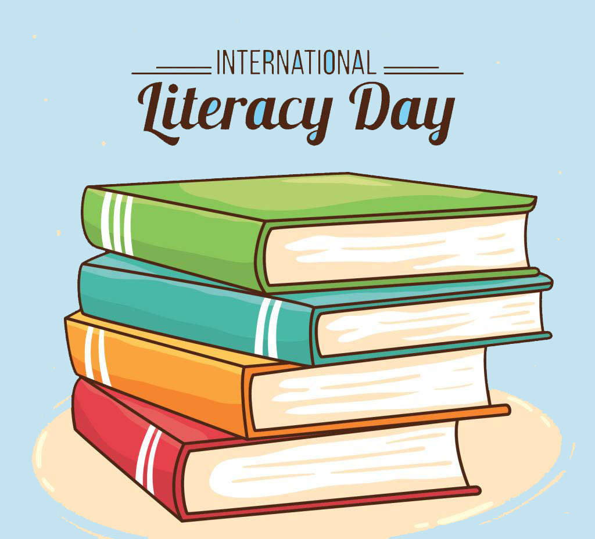
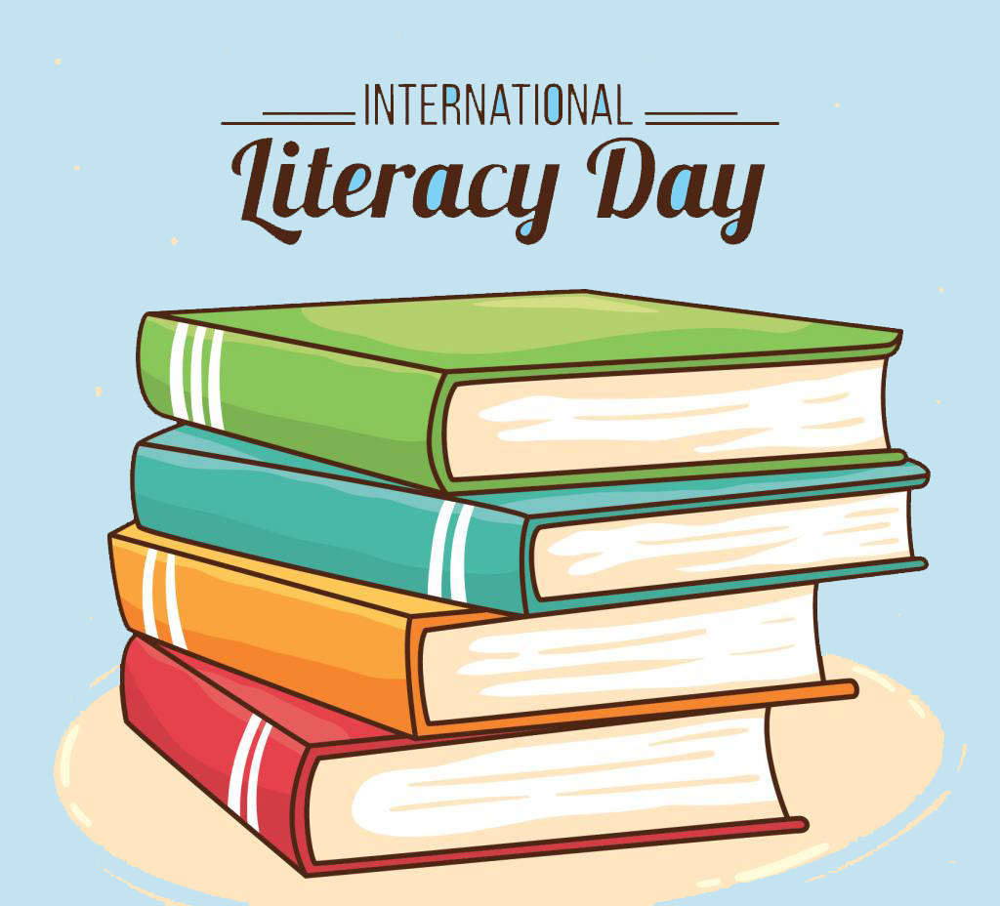

关于此网站
本网站致力于为每一个爱书人士推出能激励个人成长的好书！只有当一本书提供了精神成长、工作技能的提升，才会被我们所推荐！读书的益处:
1. 读书可以增加谈吐深度2.读书可以保持大脑的活跃
3.读书可以使人抵抗孤独
4.读书可以释放压力
5.读书使人明智
小组信息
学院：经贸学院班级：17电子商务B2班
小组：“高尔基”小组
小组成员分工情况：
文学艺术：借助语言、表演、造型等手段塑造典型的形象反映社会生活的意识形式，属于社会意识形态。它包括语言艺术、表演艺术、造型艺术和综合艺术等。著名文学如：《红楼梦》 《阿Q正传》 《天下无贼》
人文社科：人文科学和社会科学的总称。人文科学研究的对象主要是关于人的精神、文化、价值、观念的问题，而社会科学是指以社会现象为研究对象的科学，其任务是研究并阐述各种社会现象及其发展规律。著名书籍包括：《资本论》 《史记》 《周恩来传》。
推理小说：以推理方式解开故事的一种小说，通常故事都含有凶杀案与侦探，亦有部分并非以凶杀为主要剧情走向，诸如找寻失物或解开奇异事件的谜底等。著名推理小说有：《无人生还》 《白夜行》
武侠小说是中国旧通俗小说的一种重要类型，多以侠客和义士为主人公，描写他们身怀绝技、见义勇为和叛逆造反行为。著名武侠小说如:《射雕英雄传》 《神雕侠侣》
科技文献就是对科学技术有一定的参考价值的出版的书籍。著名的科技图书有：《思维简史》 《浪潮之巅》
文学艺术板块：王创镕； 人文社科板块：李豪；
推理小说板块：李映龙； 武侠小说板块：陈浩;
科学技术板块：李俊业；
人文社科：人文科学和社会科学的总称。人文科学研究的对象主要是关于人的精神、文化、价值、观念的问题，而社会科学是指以社会现象为研究对象的科学，其任务是研究并阐述各种社会现象及其发展规律。著名书籍包括：《资本论》 《史记》 《周恩来传》。
推理小说：以推理方式解开故事的一种小说，通常故事都含有凶杀案与侦探，亦有部分并非以凶杀为主要剧情走向，诸如找寻失物或解开奇异事件的谜底等。著名推理小说有：《无人生还》 《白夜行》
武侠小说是中国旧通俗小说的一种重要类型，多以侠客和义士为主人公，描写他们身怀绝技、见义勇为和叛逆造反行为。著名武侠小说如:《射雕英雄传》 《神雕侠侣》
科技文献就是对科学技术有一定的参考价值的出版的书籍。著名的科技图书有：《思维简史》 《浪潮之巅》
文学艺术板块：王创镕； 人文社科板块：李豪；
推理小说板块：李映龙； 武侠小说板块：陈浩;
科学技术板块：李俊业；
关于书籍的格言
为乐趣而读书。 —— 毛姆 读书之法，在循序而渐进，熟读而精思。 —— 朱熹
读书使人心明眼亮。 —— 伏尔泰